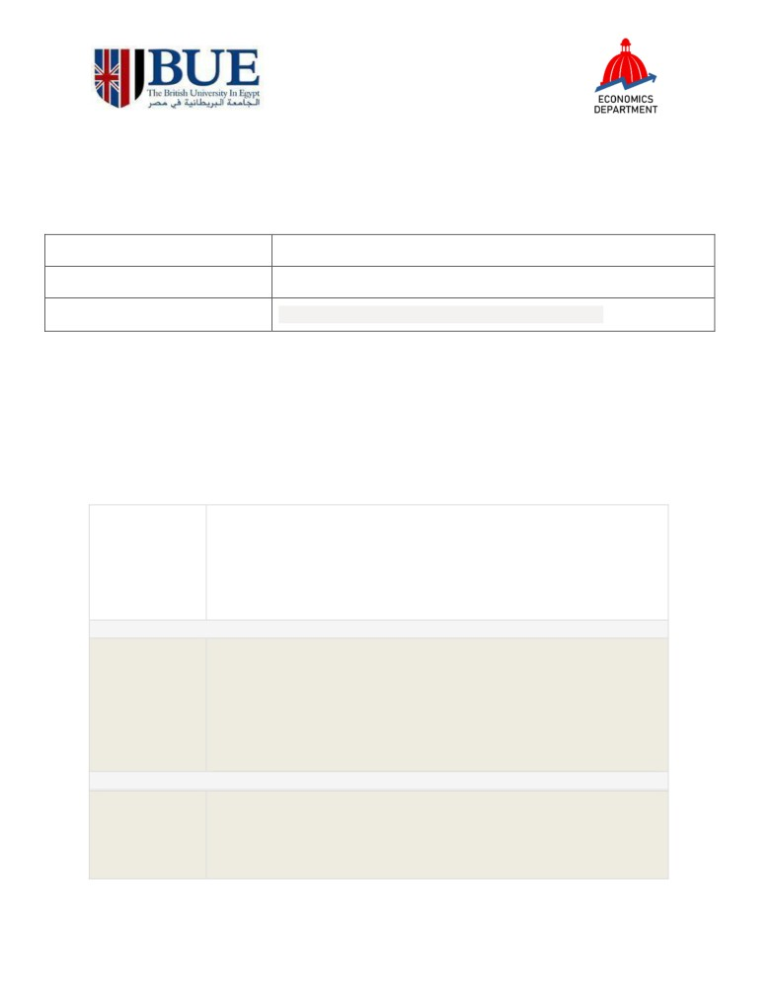
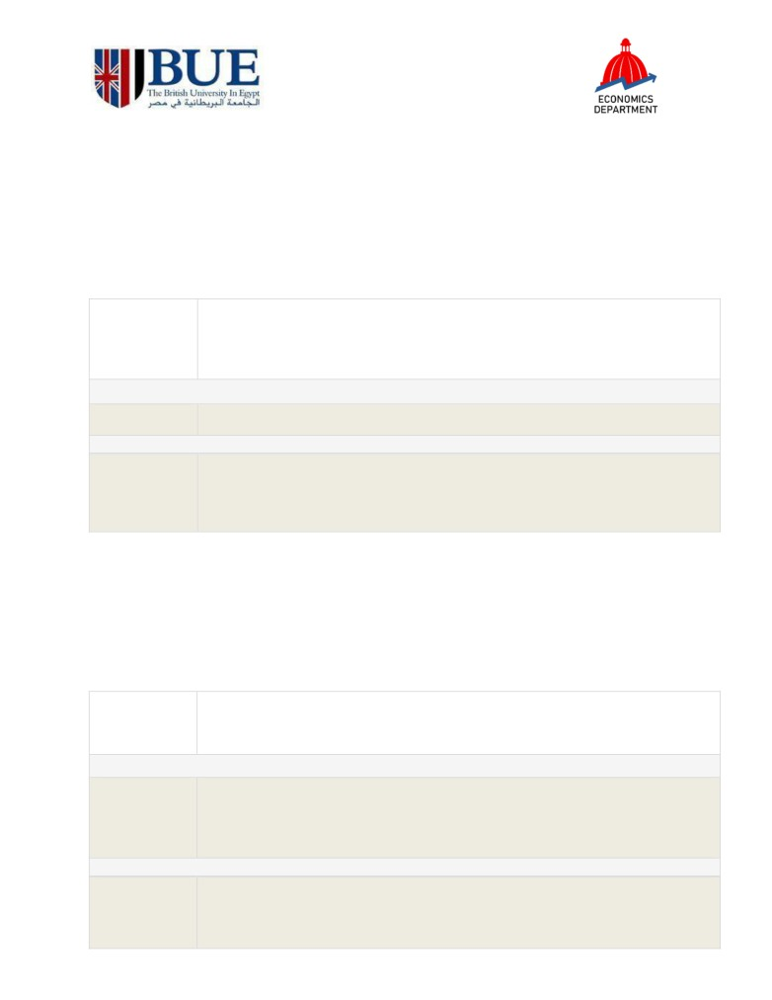
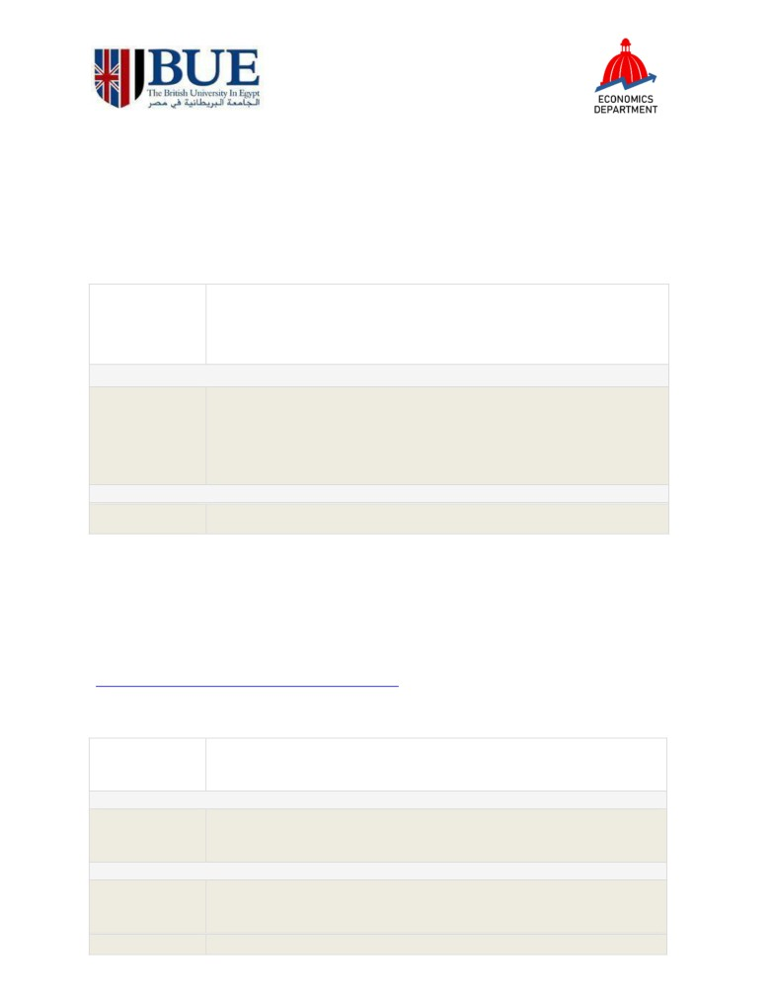

Training Workshop
Data Analysis using R-Software
28th to 30th of September 2021 & 3rd to 4th of October 2021
VENUE
Information Skill Lab 2 (Library Ground Floor)
INSTRUCTOR
Engi Amin, Faculty of Economics and Political Science, Cairo University
WORKGROUP ONEDRIVE LINK
AGENDA
Day One: 28th of September, 2021 Introduction to Data Analysis in R
The first day is a basic introduction to the programming language of R. Participants will learn
how to retrieve data from the internet using R, merge data and produce dataset from their
research interest.
References: Zuur, A., Ieno, E. N., & Meesters, E. (2009). A Beginner's Guide to R. Springer Science &
Business Media
Session 1: Data Generation and Research Questions
9:00- 10:30
1. Getting the Data
2. Formulating Research Questions
3. Workflow of Data Analysis
4. Installing and Running R
15 minutes break
Session 2: R coding basics
1. Variable Assignment
2. Datatypes and Operators
3. Basic Plotting
4. Basic Control Flows
5. Basic Functions
10:45 - 12:30
Refreshment break
Exercises and Applying Coding Basics to Sample Dataset
13:15 - 15:00
(Participants will be grouped and will choose to work with the dataset
from the options sent by Ms. Engi or from their own datasets)

Day Two: 29th of September, 2021 Data Wrangling in R (using tidyverse)
Data wrangling is the process of gathering and importing data, assessing its structure and quality,
and cleaning it before actual data analysis, visualization and modeling. Using data retrieved in the
previous session, participants will assess the quality of retrieved datasets and create variables that
serve the research question. Participants will then apply the concepts explained on the datasets they
submitted.
Reference: Wickham, H., & Grolemund, G. (2016). R for data science: import, tidy, transform,
Session 1: Importing and Assessing Data
1. Importing and Reading Data
2. Assessing Data
9:00- 10:30
3. Installing and Loading R Packages
15 minutes break
Session 2: Data Cleaning and Tidying
10:45 - 12:30
Refreshment break
Importing Selected Datasets and Applying Data Tidying
(Using participants’ datasets in the areas of Microeconomics, Macroeconomics
13:15 - 15:00
and Business Accounting & Finance)
Day Three: 30th of September, 2021 Exploratory Data Analysis and
Visualization in R (using dplyr and ggplot2)
Exploratory data analysis is used to summarize datasets and discover patterns among the data. Good
EDA can give us insights beyond formal modeling and hypothesis testing. Participants will learn data
visualization techniques using the data retrieved and cleaned in the previous sessions.
Reference: Wickham, H., & Grolemund, G. (2016). R for data science: import, tidy, transform,
Session 1: Data Aggregation and Manipulation
1. Piping
9:00- 10:30
2. Generating Summary and Frequency Tables
15 minutes break
Session 2: Data Visualization
1. Generating simple plots
2. Generating multi-faceted plots
10:45 - 12:30
Refreshment break
Applying Data Manipulation Techniques and Visualizations to Selected Datasets
13:15 - 15:00

Day Four: 3rd of October, 2021 Statistical Testing and Modeling in R (using caret)
Statistical modeling is one of the most important aspects of dealing with data. It is used to
identify patterns in data, untangle multiple influences on an outcome, assess the strength of
evidence, and forecasting. Participants will learn how to apply different types of regression
analysis on the selected dataset according to their research question and hypothesis.
Reference: James, G., Witten, D., Hastie, T., & Tibshirani, R. (2013). An introduction to statistical
learning (Vol. 112, p. 18). New York: springer.
Session 1: Parametric and Non-Parametric Tests
1. Choosing a test
9:00- 10:30
2. Parametric tests
3. Non-parametric tests
15 minutes break
Session 2: Regression Analysis
1. Linear regression
2. Logistic regression
10:45 - 12:30
3. Negative Binomial regression
4. Tobit Regression
Refreshment break
Applying Statistical Testing and Modeling to Selected Datasets
13:15- 15:00
Day Five: 4th of October, 2021 Time Series and Panel Data in R
Time series and panel data lie at the heart of Econometrics. They contain more information,
more variability, and more complexities than cross-sectional data. Participants will learn how to
apply time series analysis on the selected dataset. They will also learn how to apply panel data
analysis by testing the fixed and random effects.
References: Coghlan, A. (2015). A little book of R for time series. Available at: https://a-little-
Hanck et al. (2020). Introduction to Econometrics with R. Available
9:00- 10:30
Session 1: Time Series Analysis
a. Decomposing Time Series
b. ARIMA Models
15 minutes break
10:45 - 12:30
Session 2: Panel Data Analysis
a. Fixed Effects
b. Random Effects
Refreshment break
Applying Time Series or Panel Analysis to Selected Datasets in R +
13:15 - 14:30
Group Presentations of Analysis Done on Datasets During Entire
Workshop
14:30- 15:00
Closing Session
Suggested Readings
Hanck et al. (2020). Introduction to Econometrics with R. Available at:
James, G., Witten, D., Hastie, T., & Tibshirani, R. (2013). An introduction to statistical
learning (Vol. 112, p. 18). New York: springer. Available at:
Wickham, H., & Grolemund, G. (2016). R for data science: import, tidy, transform, visualize,
Zuur, A., Ieno, E. N., & Meesters, E. (2009). A Beginner's Guide to R. Springer Science &
Business Media. Available at: